Материалы предоставляются по коду доступа.
Один и тот же зверь: идентичность, полный рост вертикально, две стойки, голова, кисти и стопы. Белый фон нужен, чтобы этот аватар дальше оживлять видеомоделью и сажать в любую локацию. Версия 2 от 25.09: полный рост крупно, одни кисти и одни стопы во всех кадрах.
Главные кадры: кисть сверху и сбоку, стопа сбоку и спереди. Кисть: четыре пальца и большой, когти растут из кончиков пальцев. Стопа: стоит на пальцах, сбоку маленький прибылой палец. Все кадры ниже равняются на эти.
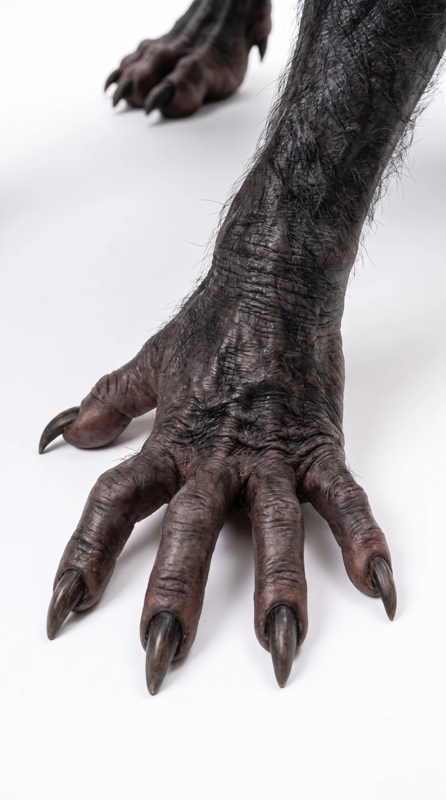
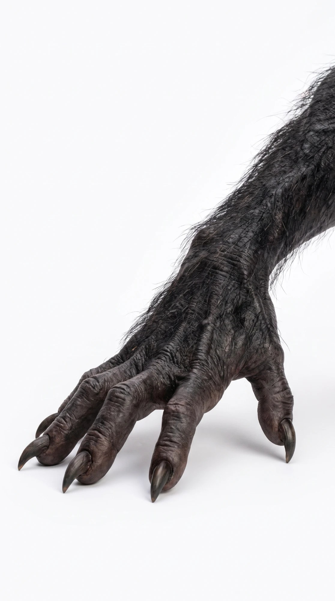
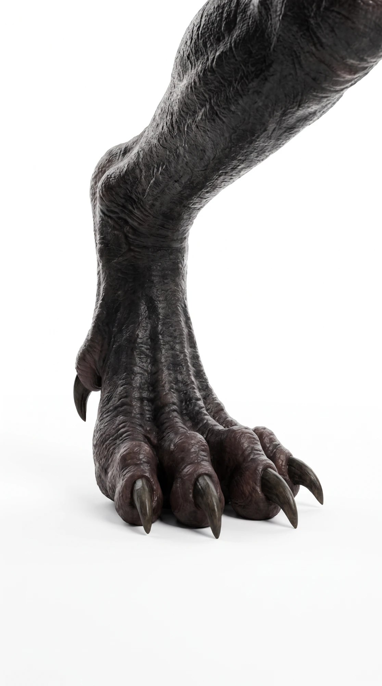
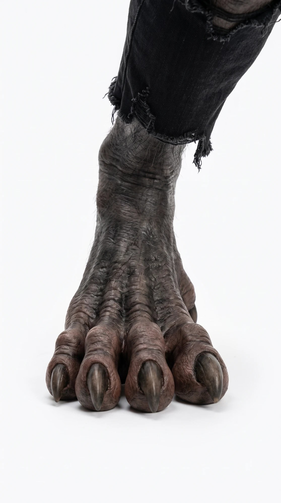
Эталонный кадр, от которого сделаны все остальные: короткая широкая морда, маленькие уши, гребень от макушки по хребту в хвост, голая мокрая кожа в шрамах, рваные тёмные штаны.
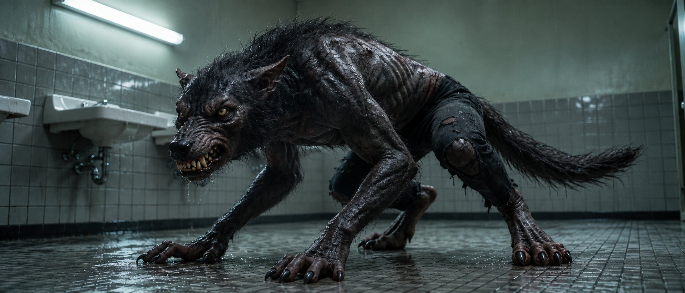
Вертикальные кадры, зверь заполняет кадр целиком. Стоя на двух ногах, слегка сгорблен, руки висят низко. Со спины виден гребень, переходящий в хвост, и голая спина.
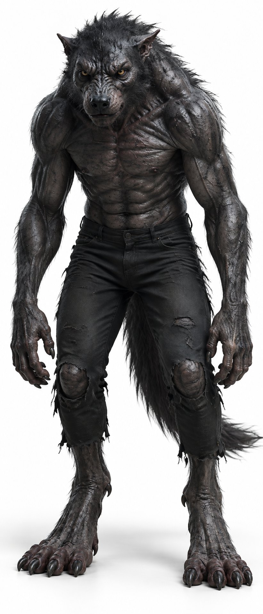
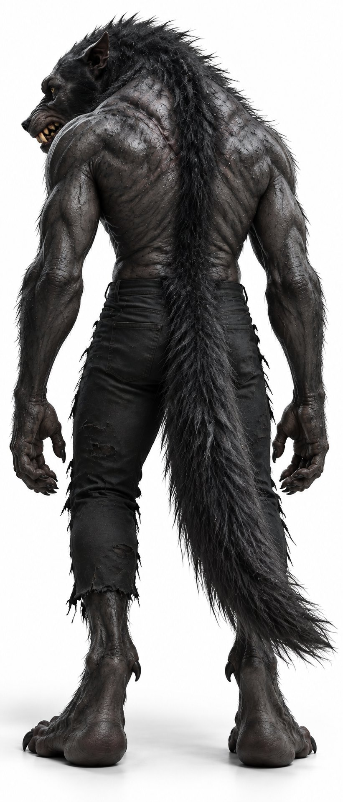
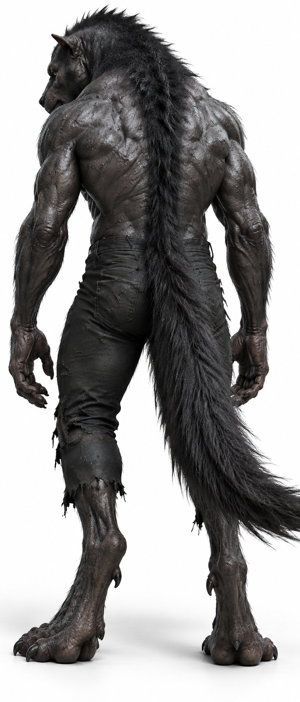
Охотничья: тело низко, длинные руки вперёд, остаётся гуманоидом на четырёх. Атака: на двух ногах, лапы подняты, оскал без мультяшного рёва.
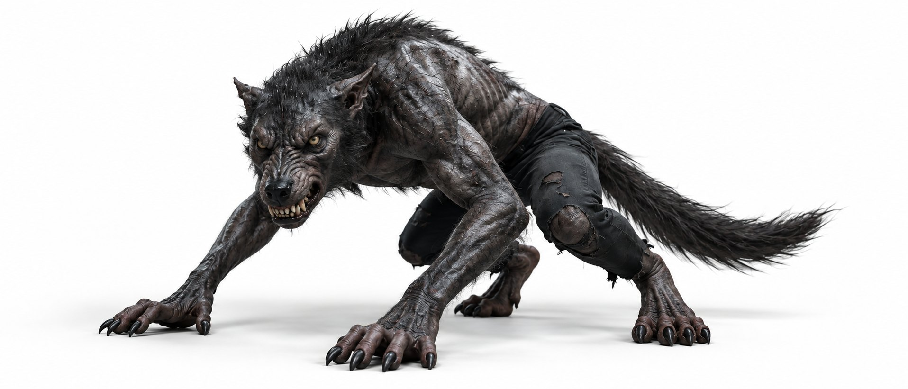
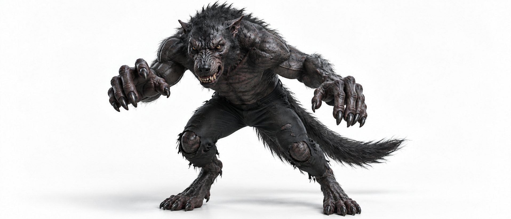
Два канонических лица: нейтральное для эталонных кадров и агрессивное. В профиль морда остаётся короткой.
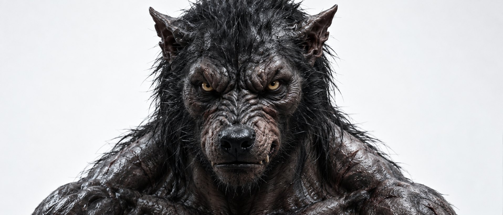
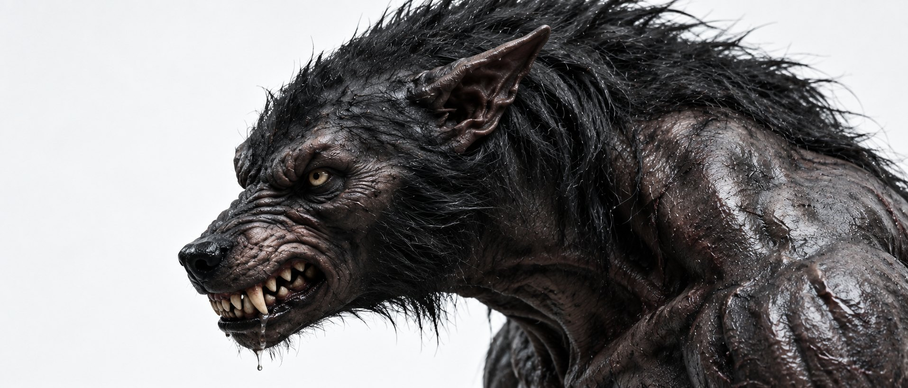
Та же кисть в сценах, тёмный свет и цвет фильма. Когти растут из кончиков пальцев и загибаются вниз, под ними отдельные подушки.
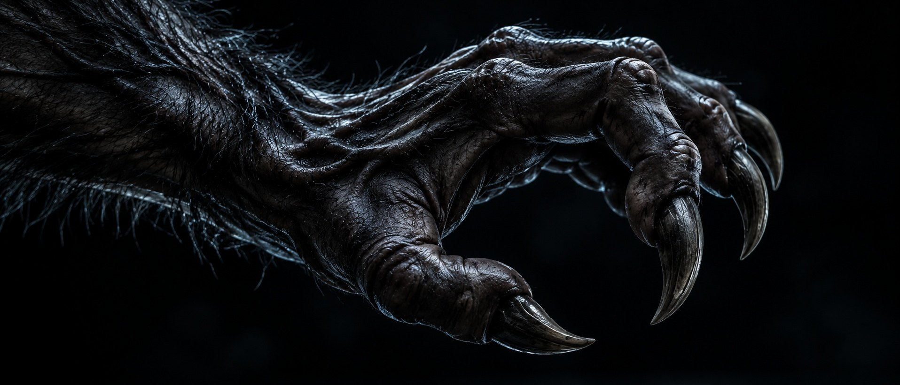
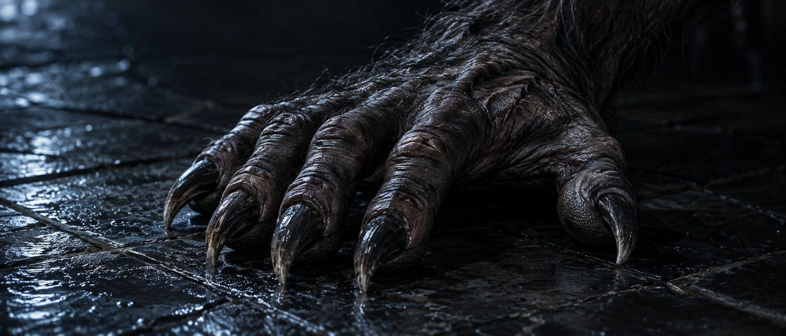
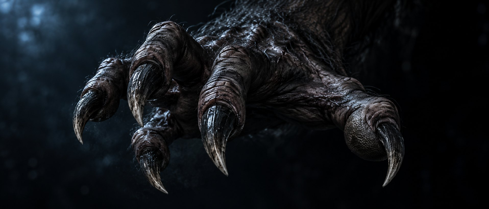
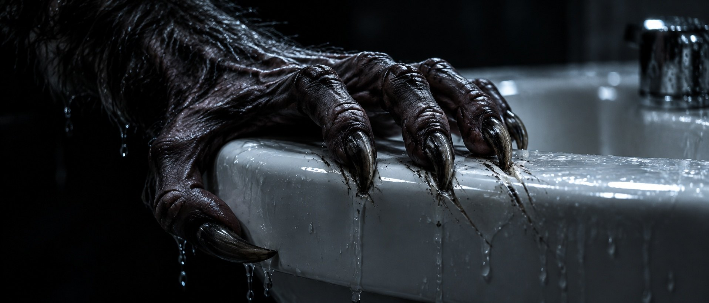
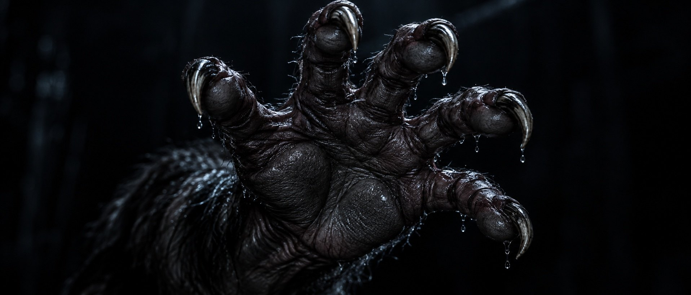
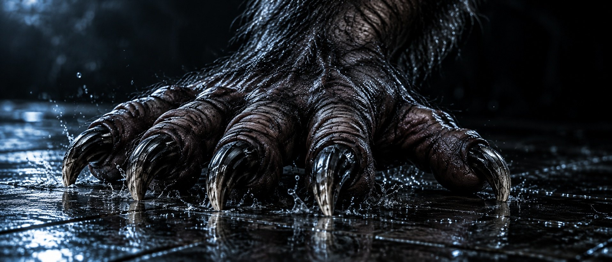
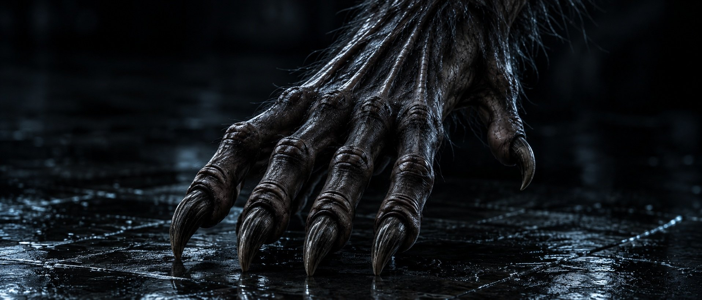
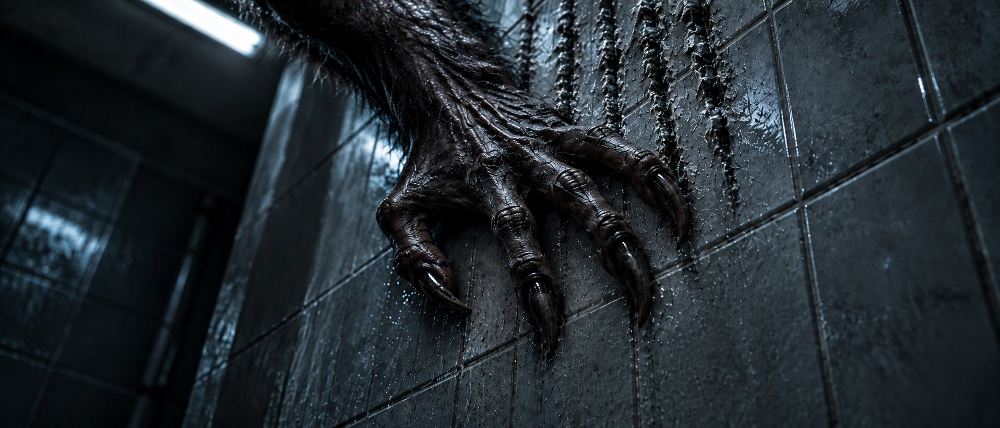
B — четыре пальца на земле и маленький прибылой выше. C — кадр, который принёс Куаныш: та же схема, но плюсна длиннее, пятка выше, когти крупнее. Стопу художник ещё не делал.
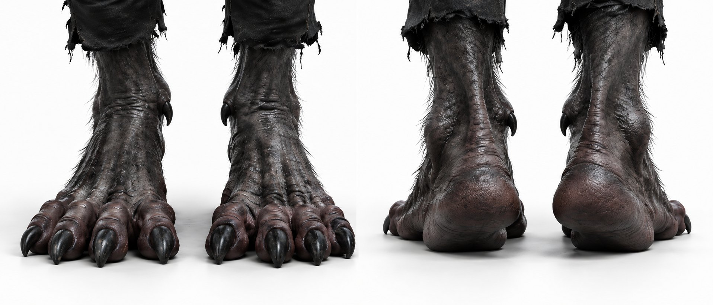
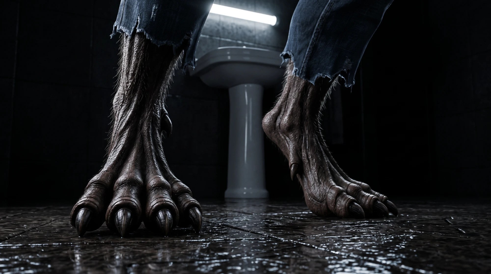